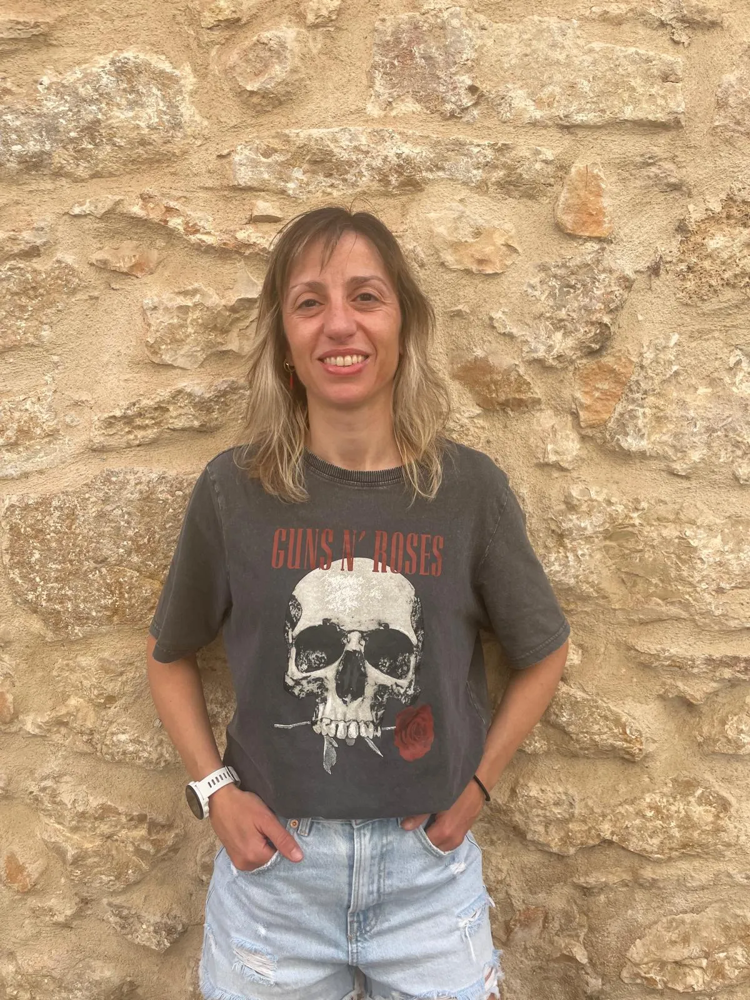

Terapia caminando · Adolescencia · DueloMònica
Mònica
Caballer
Psicóloga
Psicóloga en La Sénia · Terapia caminando, terapia con perros y acompañamiento emocional
Un espacio terapéutico cercano, humano y en movimiento para acompañar a adolescentes, familias y personas que atraviesan momentos difíciles.

Caminar, respirar y sentirse acompañado también pueden formar parte del proceso terapéutico.
Espacio pensado para sesiones en La Sénia y entorno natural.